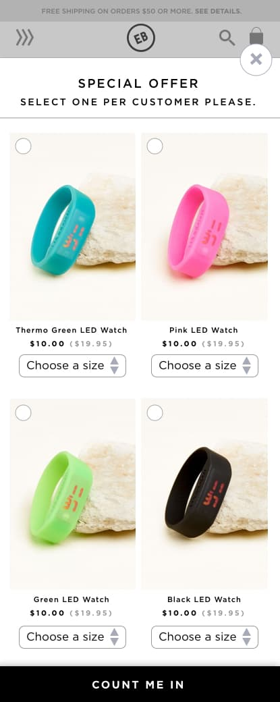

Add free item at cart
www.earthboundtrading.com
The auto-add-product feature cart offers users a freebie with any purchase order.
Desktop
Mobile
The challenge
At one time there was an excess of product that stakeholders wanted to sell at a loss. They asked the e-commerce team to find a way to make room in our inventory.
Managers set business goals to offer these products for free with any purchase on the website.
My team was asked to find a technical solution to execute this goal.
Research and discovery
I researched Magento plugins that were affordable and easy to integrate into our system. Most options were straightforward, and I was confident they would work after testing the plugin out of the box on a test environment.
I went over the specs with the design team, and together we collaborated to brand the feature and design how it should operate. Although the plugin offered to embed the feature on the page, we opted to use its popup functionality. I collaborated with the design team to make the experience more seamless in the cart.
The primary concern was not to make the user bombarded by the feature, but also to make the gift offer easily seen.
Another concern was to consider product variation and how that would affect the appearance of the plugin.
Sketching wireframes
Wireframing was particularly helpful when viewing how the plugin would react to just one product offer versus multiple products offers that were also configurable (like selecting sizes) and non-configurable.
We had to take into account all the possible product options that could pair up together.
To reduce potential issues, we kept the popup as close to the same specs on desktop and mobile.